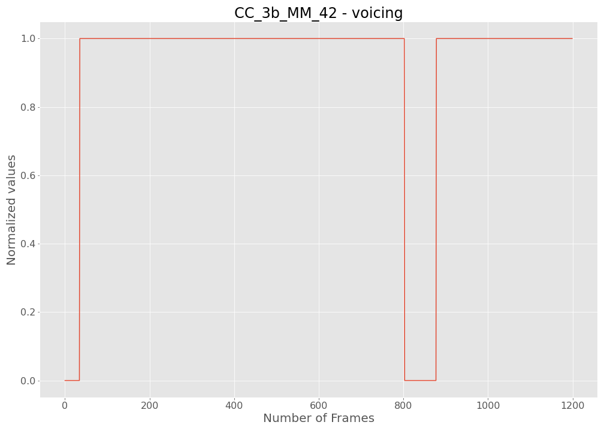
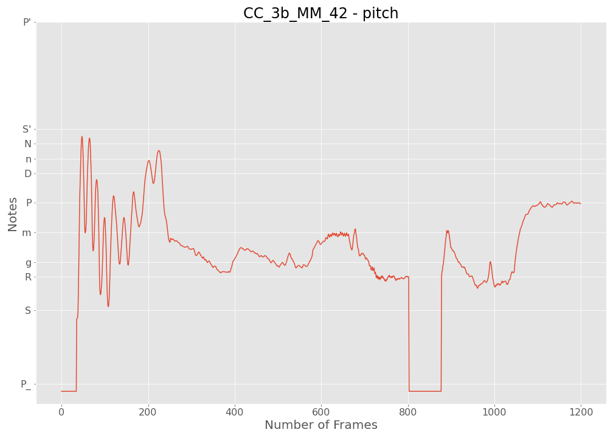
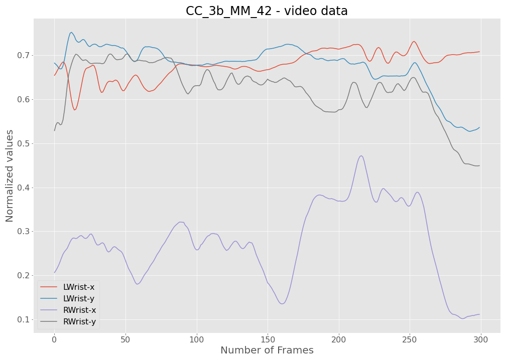

View as pdf
Dataset
Detailed description of ragas in the dataset
| RAGA | SCALE | COMMENTS |
|---|---|---|
| Bageshree | S R g m P D n | Distinguished; tanpura tuned to Ma (4) |
| Bahar | S R g m P D n N | Suggests beauty and joyous atmosphere of spring; upper tetrachord, medium-fast tempo |
| Bliaskhani Todi | S r g m P d n | Most movements in lower half of middle octave |
| Jaunpuri | S R g m P d n | Most movements in upper half of middle octave |
| Kedar | S R G m M P D N | Serious; melodic movement not straightforward |
| Marwa | S r G M D N | Major (important) raga; dominance of Re (2); movement can be straightforward |
| Miyan ki Malhar | S R g m P D n N | Associated with rainy season; serious and slow, focus on lower tetrachord |
| Nand | S R G m M P D N | Zigzag movements, especially in descent |
| Shree | S r G M P d N | Serious and awesome; complex melodic movements involving large intervals; zigzag descent |
Table S1: The pitch sets and characteristics of the nine ragas in our dataset (the latter are based on the descriptions in the Music in Motion website. For the scale, lower case letters refer to the lower (flatter) alternative and upper case to the higher (sharper) pitch in each case. This is an extension of Table 2 from the paper.
Dataset Description
| RAGA/SINGER | SCH | CC | AG | SUM |
|---|---|---|---|---|
| Bageshree | 3 | 3 | 3 | 9 |
| Marwa | 4 | 3 | 3 | 10 |
| Bahar | 3 | 3 | 2 | 8 |
| Kedar | 5 | 3 | 2 | 10 |
| Shree | 4 | 3 | 2 | 9 |
| Nand | 3 | 3 | 2 | 8 |
| Miyan ki Malhar | 5 | 3 | 3 | 11 |
| Jaunpuri | 4 | 3 | 3 | 10 |
| Bilaskhani Todi | 4 | 4 | 3 | 11 |
| Sum | 35 | 28 | 23 | 86 |
Table S2: Number of pieces per singer-raga where piece refers to an alap or pakad recording. Most individual entries in this table comprise of 2 alap and 1 pakad pieces where the alap duration ranges from 165-221 s and pakad from 18-96 s.
OpenPose skeleton tracking:
 Figure S1: Figure indicates the bounding box over which the movements of the singer is normalized from video data. The box is defined by the most extreme movements of 11 keypoints (eyes, nose, neck, shoulders, mid-hip, elbows and wrists) along the x and y axes. The x coordinates are normalized over the width of the box and the y coordinates are normalized over the height of the box.
Figure S1: Figure indicates the bounding box over which the movements of the singer is normalized from video data. The box is defined by the most extreme movements of 11 keypoints (eyes, nose, neck, shoulders, mid-hip, elbows and wrists) along the x and y axes. The x coordinates are normalized over the width of the box and the y coordinates are normalized over the height of the box.
Representation of time series from audio/video data
 Figure S2 (a): Voicing feature for an example (CC_3b_MM_42) from piece ‘CC_3b_MM’ in our dataset.
 Figure S2 (b): Pitch feature for an example (CC_3b_MM_42) from piece ‘CC_3b_MM’ in our dataset.
 Figure S2 (c): Video features including the x and y positions of the left and right wrists for an example (CC_3b_MM_42) from piece ‘CC_3b_MM’ in our dataset.
Train-Val splits in terms of pieces
Seen singer Splits:
Val (Singer 1) = Alap_take_1 (Singer 1)
Train (Singer 1) = Alap_take_2 (Singer 1) + Pakad (Singer 1) + All_Pieces (Singer 2) + All_Pieces (Singer 3)
Unseen singer Splits:
Val (Singer 1) = All_Pieces (Singer 1)
Train (Singer 1) = All_Pieces (Singer 2) + All_Pieces (Singer 3)